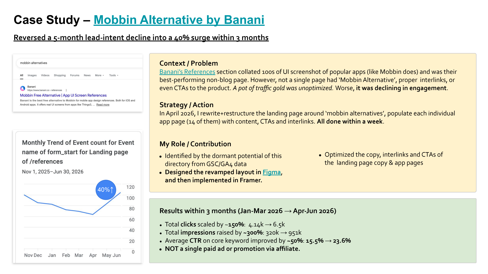
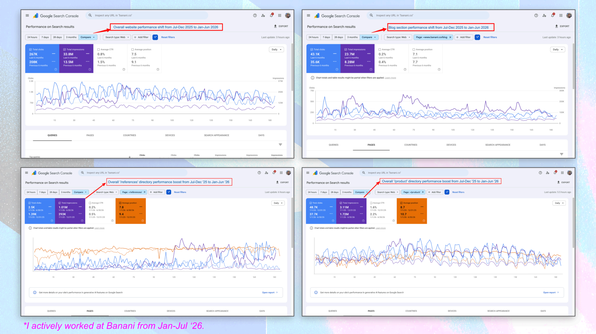
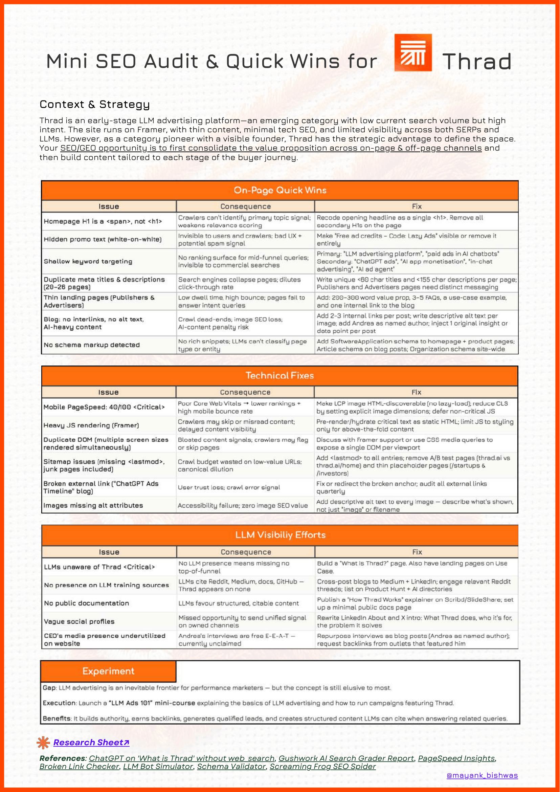
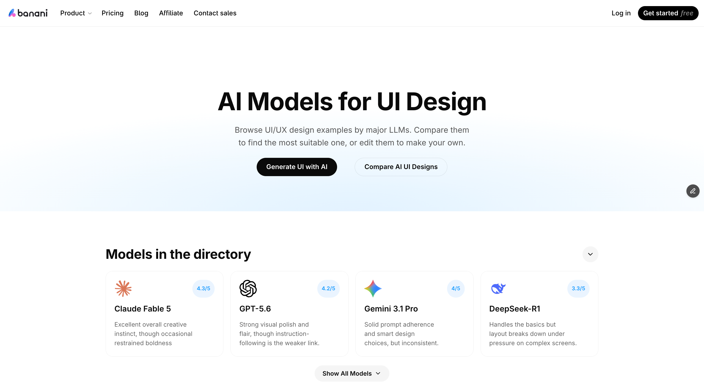
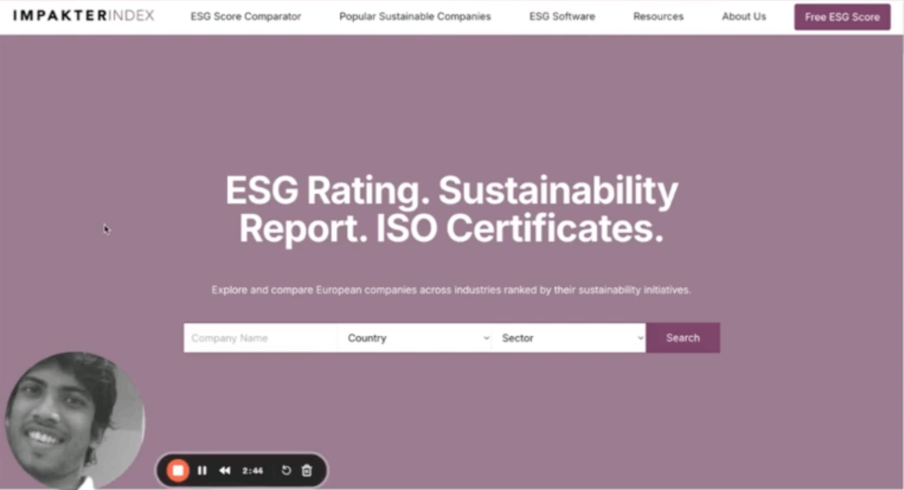

SEO
I picked up SEO during COVID — my first stint scaling TollWiki, a Silicon Valley startup’s tool directory, from 50k to 250k monthly traffic organically in a year. Since then I’ve worked across brands and agencies, strategy to execution, spanning banking, insurance, AI SaaS, HR tech, ESG tech, transportation, design, and marketing.
Case Studies

Banani’s References directory faced a 5-month lead-intent decline. I redesigned the UI, and optimized content around “mobbin alternatives”. Result: reversed decline into 40% lead-intent surge within 3 months.

Comparing my 6 months performance (Jan–Jul ‘26) with the previous 6 months (Jul–Dec ‘25), overall Banani website improved ~30% Clicks (267k), ~2.5x Impressions (33.8M), and Avg. Position ↑ by ~2.

In 2021, led the SEO content for a B2B lead magnet disguised as public encyclopedia of tolls, TollWiki. Rose from 50k → 250k monthly traffic in 6 months; NO Ads!

Optimized SEO for a guide to improve position from 10th SERP to 1st within 3 weeks. And 3 years later, in 2026, it’s still there for its keyword!
Mini SEO Audits

Banani’s foundation of search discoverability is solid—technical health markers and the existing content ecosystem of blogs, tools, and references are driving steady traffic. However, significant growth opportunities exist in consolidating SEO signals to double down on existing wins, making key landing pages more accessible, and expanding the site’s digital footprint for LLM discovery.

Marblism ranks among top SERP results for ‘ai employees’, but LLMs are mostly unaware of its presence. Cursory content audit reveals pages with low search/intent volume and site-level visibility issues. Meanwhile, it’s in an emerging category and is garnering positive reviews — favorable factors to leverage. So, 1st month, we focus on SEO groundwork and unifying brand signals.

Redfin Aquarium’s website decently communicates its proposition; plus the 10+ year old domain helps it rank well on SERP for “luxury aquarium builders UAE”. However, technical SEO gaps, UI/UX friction, and weak content structure hinder the site’s user experience and AI/LLM visibility. With relatively contained fixes, the site can convey “Opulence & Intelligence” branding.

Thrad is an early-stage LLM advertising platform occupying an emerging category — low current search volume, but high intent. Built on Framer, the site has thin content and minimal technical SEO, limiting visibility across both SERPs and LLMs. As a category pioneer with a visible founder, Thrad’s opportunity is to consolidate its value proposition across on-page and off-page channels, then build journey-stage content.
Content Automation (with AI)

Following the keyword spikes in ‘UI design by XYZ model’, I set up a unique directory of UI designs by top LLMs. Used Framer agent + OpenRouter + Claude Code to automate CMS design & the sourcing of the UI screenshots from various LLMs.

As part of my post-MBA internship at IMPAKTER, I led a project to help produce bulk SEO content. It involved repurposing publicly available sustainability data of 1000s of companies into a dynamic, SEO-friendly template.
SEO Content Strategy
SEO Workshop
I spoke on SEO Basics to a group of 20+ people at the Nerd Nite/Strasbourg in April ‘25. Session was for 1 hour, including a QnA after my presentation.
See PPT >
See PPT >